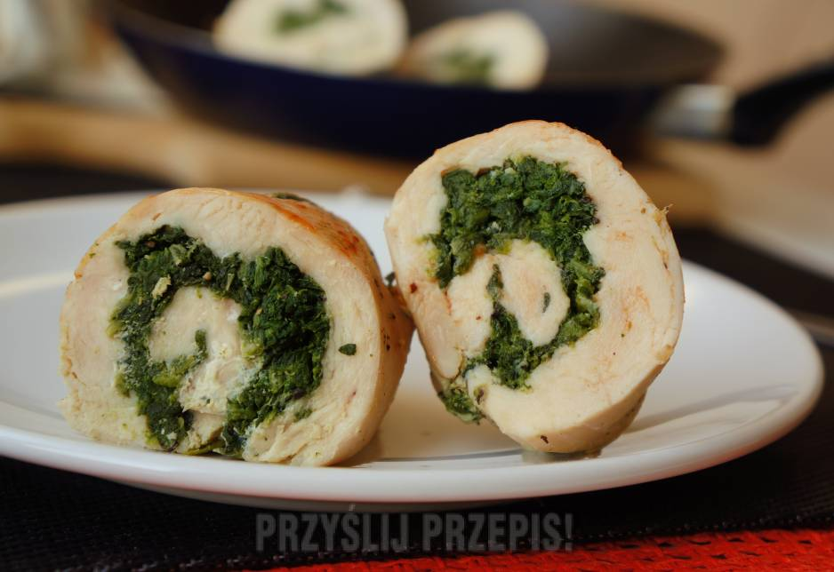
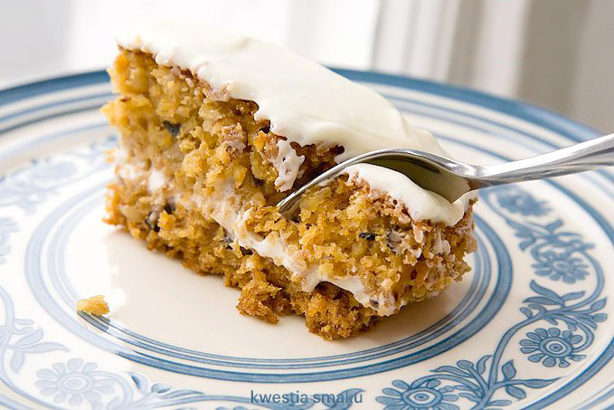

Do dzieła!
Zawijana pierś z kurczaka ze szpinakiem i serem feta

| Składniki< |
Przepis
- Zaczynamy od oczyszczenia mięsa. Wycinamy błony i filetujemy. Ewentualnie możemy lekko roztłuc tłuczkiem.
- Teraz przygotujemy farsz: łączymy rozmrożony i odsączony z wody szpinak z serem feta i pokrojonymi w kostkę suszonymi pomidorami. Doprawiamy do smaku.
- Farsz rozmarowujemy na przygotowane wcześniej filety. Zwijamy w rolki i zabezpieczami wykałaczką.
- Panierujemy w mące, jajku i bułce tartej. Obsmażamy krótko na patelni na dobrze rozgrzanym oleju.
- Przekładamy kurczaka do naczynia żaroodpornego i pieczemy w piekarniku 30 minut w temperaturze 180 st.
|
| 400 g świeżej piersi z kurczaka |
| 1/2 opakowania sera feta |
| 4-5 suszonych pomidorów |
| 1/2 opakowania szpinaku |
| sól, pieprz |
| mąka, jajko, bułka tarta |
Sushi z łososiem i papryką

| Składniki |
Przepis
- Dokładnie wypłukać ryż do sushi aż woda będzie przezroczysta (im więcej tym lepiej).
- Ryż do sushi zagotować z wodą w proporcji 2:3 (koniecznie pod przykryciem). Doprawić sosem do ryżu.
- Na rozłożone liście alg rozmarować ugotowany i lekko przestudzony ryż, następnie majonez i chrzan.
- Pokrojonego drobno łososia i pokrojoną w cienkie paski paprykę układać na ryżu.
- Zawinąć i wstawić do lodówki na co najmniej 30 minut. Podawać z imbirem i sosej sojowym.
|
| 100 g łososia |
| 50 g ryżu do sushi |
| 4 listki alg morskich |
| Młody imbir różowy |
| Sos sojowy |
| Sos do ryżu |
| Mała papryka |
| Majonez |
| Chrzan |
Ciasto marchewkowe

| Składniki< |
Przepis
- Jajka ocieplić w temperaturze pokojowej. Ubić je do podwojenia objętości. Dodać cukier i dalej ubijać aż masa będzie gładka i puszysta. Wciąż ubijając na wysokich obrotach, dolewać ciągłym, cieniutkim strumieniem olej.
- Dodać marchewkę, ananasa, orzechy, wiórki kokosowe i delikatnie wymieszać. Piekarnik nagrzać do 150 stopni C.
- Do osobnej miski przesiać mąkę, dodać proszek do pieczenia, sodę, cynamon i sól, wymieszać. Przesypać do miski z marchewką i delikatnie połączyć wszystkie składniki.
- Ciasto wyłożyć do formy o średnicy 24 cm wyłożonej papierem do pieczenia. Piec przez 1 godzinę lub do suchego patyczka.
|
| 2 jajka |
| 200 g drobnego cukru lub cukru pudru |
| 150 ml oleju roślinnego |
| 200 g drobno startej marchewki |
| 50 g posiekanych orzechów włoskich lub pekan + do dekoracji |
| 75 g drobno pokrojonego ananasa (świeżego lub z puszki) lub jabłka |
| 50 g wiórków kokosowych |
| 200 g mąki |
| 1/2 łyżeczki proszku do pieczenia |
| po 1 łyżeczce sody i cynamonu |
| szczypta soli |
|